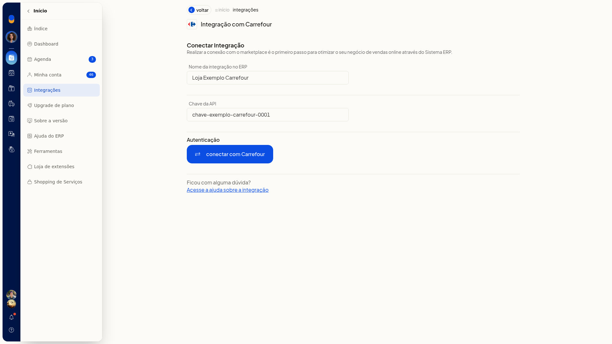
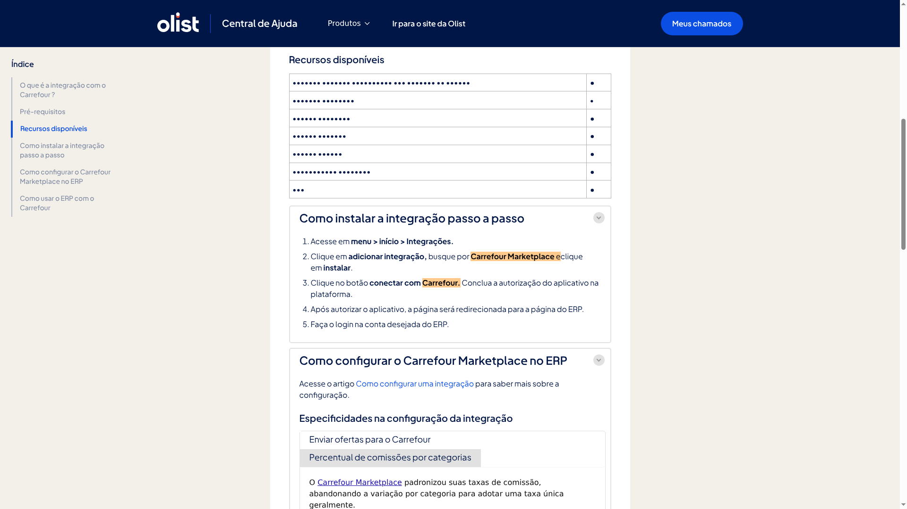

Integração com o Carrefour
A integração com o Carrefour Marketplace conecta o ERP da Olist à plataforma de vendas do Carrefour. Com ela, você centraliza pedidos, estoque, preços e a situação de envio.
Depois de conectada, a integração recebe pedidos em aberto, envia produtos, estoque e preços, sincroniza a situação dos pedidos e usa OMS. Ela não recebe produtos do marketplace.
Pré-requisitos
- Informe as dimensões no cadastro dos produtos.
- Configure o contrato com os Correios na conta, para cálculo de preços e prazos. Se não houver Correios, use Intelipost ou Melhor Envio.
- Tenha a chave da API para o campo Chave da API.
Importante
- O envio de ofertas só pode ocorrer depois da aprovação dos produtos pelo Carrefour.
- Depois da publicação, o ERP só altera preços e estoques. Descrição e imagem não podem mais ser editadas pelo ERP; a alteração é pedida ao Carrefour por chamado.
- O envio de ofertas não sai no momento da ação. As atualizações são processadas a cada 5 minutos, com até 100 preços por envio, até concluir.
- Receber produtos do marketplace não está disponível. Estão disponíveis: receber pedidos em aberto, enviar produtos, enviar estoque, enviar preços, sincronizar a situação e usar OMS.
Instruções
-
Acesse Início > Integrações.
-
Em Adicionar integração, no grupo Marketplaces e Hubs, localize Carrefour e clique em instalar.
-
Na tela de conexão, preencha Nome da integração no ERP e Chave da API. Os dois campos não são obrigatórios na tela.

-
Clique em conectar com Carrefour para autorizar o aplicativo na plataforma. Depois da autorização, volte à página do ERP e faça login na conta desejada. A integração passa a receber pedidos em aberto, enviar produtos, estoque e preços, sincronizar a situação e usar OMS.
Resultado
A tela de conexão fica pronta para autorizar. Depois da autorização e do login na conta desejada, a integração recebe pedidos em aberto, envia produtos, estoque e preços, sincroniza a situação dos pedidos e usa OMS.
Informações adicionais
A comissão é de 16% sobre o produto vendido
A comissão é de 16% sobre o valor total do produto vendido, a mesma taxa para todas as categorias. Não há taxa de cadastro nem mensalidade fixa. Pode haver comissão zerada ou reduzida por tempo limitado, em geral nos primeiros 3 meses, para parceiros específicos.
